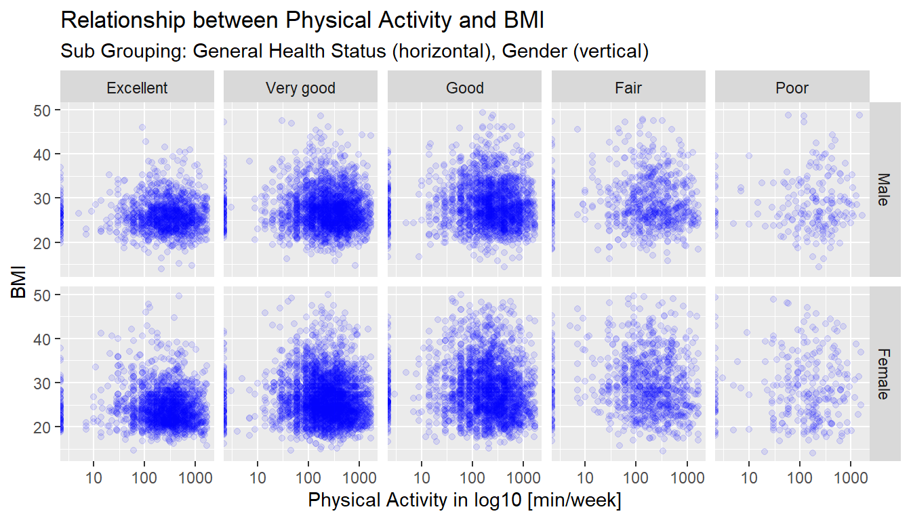

Exploring the BRFSS data
Hartmut Schaefer
2024-01-13
Setup
Part 1: Data
Data exploration
The objective of BRFSS data collection is to determine behavioral risk factors to chronic diseases in adults in the US.
The data were collected through telephone interviews in 51 states of the US in year 2013 by stratified sampling, i.e. random samples for each strata (state). There are 491,775 observations in the data set. The sample is large enough to generalize to the population.
Limitations:
The survey does not include institutionalized adults. This may cause
some bias and affect the conclusion.
The survey uses a random sample and therefore only correlations can be inferred between variables. In order to infer causality a controlled experiment would be required.
Part 2: Research questions
Research question 1:
Is income level (income2) correlated with general health
(genhth)?
- What is the probability of good health given a high income?
- What is the probability of high income given a good health?
- Are the variables income level and general health independent or
dependent?
Research question 2:
Is general health (genhlth) correlated with physical
activity (pa1min_) and how does it change by gender
(sex)?
- Describe physical activity statistically
- Find the relationship between general health and physical
activity
- Is there a difference in this relationship (b) in respect to
gender?
Research question 3:
Is physical activity (pa1min_) correlated with BMI (Body
Mass Index) (X_bmi5) and how does it change with general
health (genhlth) and gender (sex)?
- Describe BMI statistically
- Find the relationship between physical activity and BMI
- Is there a difference in this relationship (b) in respect to general health and gender?
Research question 1:
Is the income level (income2) correlated with general
health (genhlth)?
- What is the probability of good health given a high income?
- What is the probability of high income given a good health?
- Are the variables income level and general health independent or
dependent?
Here we are comparing two categorical variables. For the comparison
we will create a contingency table and visualize the
proportions between each category.
Next we will calculate conditional probabilities and
test whether both categories are independent.
Preparing the data set and data cleaning
Reduce the number of variables: Extract variable
genhth (general health) and income2 (income
level)
Inspecting the categories for variable
genhlth:
## # A tibble: 6 × 2
## genhlth count
## <fct> <int>
## 1 Excellent 85482
## 2 Very good 159076
## 3 Good 150555
## 4 Fair 66726
## 5 Poor 27951
## 6 <NA> 1985There are five ordinal categories: excellent, very good, good, fair,
poor and a number of NAs
Inspect the categories for variable
income2:
## # A tibble: 9 × 2
## income2 count
## <fct> <int>
## 1 Less than $10,000 25441
## 2 Less than $15,000 26794
## 3 Less than $20,000 34873
## 4 Less than $25,000 41732
## 5 Less than $35,000 48867
## 6 Less than $50,000 61509
## 7 Less than $75,000 65231
## 8 $75,000 or more 115902
## 9 <NA> 71426There are 7 ordinal categories: from <$5K to >$75K and a number
of NAs.
Remove NAs form the data set
Rows will be deleted if any of the variable contains a NA (not
available). We are using !is.na() function, i.e. “is not
NA”. Note: logical expression “A or B” is equivalent with “NOT A and NOT
B”.
# remove NAs
df_q1 <- df_select_q1 %>%
group_by(genhlth,income2) %>%
filter(!is.na(genhlth), !is.na(income2))Rename values in category income2 to
simplify output. The levels (names) in the categorical variable
income2 are shorten for easier plotting, using function
recode()
# Rename values in income2
df_q1$income2 <- recode(df_q1$income2,
"Less than $10,000" = "~$10K",
"Less than $15,000" = "~$15K",
"Less than $20,000" = "~$20K",
"Less than $25,000" = "~$25K",
"Less than $35,000" = "~$35K",
"Less than $50,000" = "~$50K",
"Less than $75,000" = "~$75K",
"$75,000 or more" = "$75K~")
Exploring the data set
Visualize distribution of categories using bar-plots
General Health:
# Bar chart of category genhelth (COUNT)
df_q1 %>%
ggplot(aes(x = genhlth)) +
geom_bar(fill="gray", color="white")+
labs(title = "General health: Distribution of counts")
Highest counts are in categories “very good” and “good”
Income Level:
# Bar chart of category income levels (COUNT)
df_q1 %>%
ggplot(aes(x = income2)) +
geom_bar(fill="gray", color="white")+
labs(title = "Income levels: Distribution of counts")
Highest count in category “$75K or more”. Indication of certain bias to
more respondents in higher income level. The relationship between
“income” and “general health” maybe biased as well. Nevertheless, we
will proceed with the investigation.
Create a contingency table
# Creating a contingency table with absolute counts
tb_cont_table1_q1 <- table(df_q1)
tb_cont_table1_q1## genhlth
## income2 Excellent Very good Good Fair Poor
## ~$10K 2319 3976 7515 6929 4513
## ~$15K 2128 4567 8440 7187 4311
## ~$20K 3551 7479 11948 8053 3674
## ~$25K 4719 10800 14931 7845 3268
## ~$35K 6521 14740 17287 7564 2575
## ~$50K 9972 21668 20468 7153 2058
## ~$75K 12701 26044 19710 5226 1421
## $75K~ 32343 48973 27402 5645 1296
Visualize the contingency table as mosaic plot:
# change format from table to data frame (tibble)
df_cont_table1_q1 <- as_tibble(tb_cont_table1_q1)
# change character format to factor
df_cont_table1_q1$genhlth <- factor((df_cont_table1_q1$genhlth),
levels = c("Poor",
"Fair",
"Good",
"Very good",
"Excellent"))
df_cont_table1_q1$income2 <- factor((df_cont_table1_q1$income2),
levels = c("~$10K",
"~$15K",
"~$20K",
"~$25K",
"~$35K",
"~$50K",
"~$75K",
"$75K~"))
# creating a mosaic plot
df_cont_table1_q1 %>%
ggplot()+
geom_mosaic(aes(x = product(income2,genhlth), fill=income2, weight = n))+
coord_flip()+
labs(title = "Relations between income level and general health status",
fill = "Income levels")+
ylab("Income Level (proportions)")+
xlab("General Health (proportions)")+
theme(axis.text.x = element_blank(),
axis.ticks.x = element_blank())+
scale_fill_brewer(palette = "RdYlBu")
Conclusion:
- the higher the “income” level the better the the general health
status
- the lower the “income” level the poorer the health status
- in the mid-income range the health status is more equally
distributed
From this graph it is relatively difficult to grasp, that the income
level is related to health status. We can simplify the graph by
aggregating the levels to two categories per variable
Simplify the categories by aggregation
For better extraction of the main trend, the income levels will be aggregated into two groups: income “above median” and “below median”. As threshold we will use the national (US) median income in 2013. According to the census bureau the median income in 2013 was $52,250. Therefore we will cut into two groups: “<$50K” and “>$50K”.
The general health status will be also aggregated into two groups: Health “Less good” and “More than good”.
Aggregate levels:
df_cont_table1_agg_q1 <- df_q1
df_cont_table1_agg_q1$income2 <- recode(df_cont_table1_agg_q1$income2,
"~$10K" = "below median",
"~$15K" = "below median",
"~$20K" = "below median",
"~$25K" = "below median",
"~$35K" = "below median",
"~$50K" = "below median",
"~$75K" = "above median",
"$75K~" = "above median")
df_cont_table1_agg_q1$genhlth <- recode(df_cont_table1_agg_q1$genhlth,
"Poor" = "less good",
"Fair" = "less good",
"Good" = "less good",
"Very good" = "more than good",
"Excellent" = "more than good")
Creating the contingency table from aggregates
# Creating a contingency table with absolute counts
tb_cont_table1_agg_q1 <- table(df_cont_table1_agg_q1)
tb_cont_table2_agg_q1 <- addmargins(tb_cont_table1_agg_q1)
tb_cont_table1_agg_q1## genhlth
## income2 more than good less good
## below median 92440 145719
## above median 120061 60700
Visualize the contingency table as mosaic plot:
# change from table to data frame
df_cont_table1_agg_q1 <- as_tibble(tb_cont_table1_agg_q1)
# change character to factor
df_cont_table1_agg_q1$genhlth <- factor((df_cont_table1_agg_q1$genhlth),
levels = c("less good",
"more than good"))
df_cont_table1_agg_q1$income2 <- factor((df_cont_table1_agg_q1$income2),
levels = c("below median",
"above median"))
# creating a mosaic plot
df_cont_table1_agg_q1 %>%
ggplot()+
geom_mosaic(aes(x = product(income2,genhlth), fill=income2, weight = n), alpha=0.5)+
coord_flip()+
labs(title = "Relations between income level and general health status",
subtitle = "Median income $52K in year 2013",
fill = "Income Levels")+
ylab("Income Level (proportions)")+
xlab("General Health (proportions)")+
theme(axis.text.x = element_blank(),
axis.ticks.x = element_blank())+
scale_fill_manual(values = c("below median" = "red", "above median" = "blue"))
Conclusion:
- the health condition is clearly correlated with income level
- lower income shows less good health conditions
- higher income shows better than good health conditions
However, since this sample is not from a controlled experiment, we
cannot draw the conclusion that a less good health is caused by lower
income.
Question 1a: Probability of good health given a high income?
Review contingency table with margins (sums):
## genhlth
## income2 more than good less good Sum
## below median 92440 145719 238159
## above median 120061 60700 180761
## Sum 212501 206419 418920Question can be formulated as
P(good health | high income):
## [1] 0.6641975If someone has a higher income above average the probability of good
health is 0.66 (or 66%).
Question 1b: Probability of high income given a good health?
Question can be formulated as
P(high income | good health)
Can be calculated with Bayes Theorem:
P(B|A) = (P(A|B) * P(B)) / P(A)
Calculate from contingency table: P(B) = P(high income)
## [1] 0.4314929Calculate from contingency table: P(A) = P(good health)
## [1] 0.5072591Calculate by Bayes Theorem: P(B|A) = P(A|B) * P(B) / P(A)
## [1] 0.5649903If someone is in category “more than good health” the probability to
be in the higher income group is 0.56 (or 56%).
Question 1c: Test for independence between income level and general health
To proof that event A (health) and B (income) are independent from each other the following formulas must hold true:
P(A|B) = P(A): P(good health | high income) = P(good health),
and
P(B|A) = P(B): P(high income | good health) = P(high income)
## [1] FALSE## [1] FALSEResult:
- P(A|B) <> P(A) and P(B|A) <> P(B) are booth FALSE
- Therefore, health condition and income level are not
independent
Conclusion of question 1:
In this question we utilized two categorical variables: income and
general health. From contingency tables we found that income and general
health are correlated. We visualized the relationship by mosaic plots in
detail and in aggregated form.
From an aggregated contingency table we calculated conditional
probabilities:
- Probability of good health given high income is 66%
- Probability of high income given good health is 56%
We further verified that both variables are dependent from each
other
Cleaning up Global Environment
rm(ct,
df_cont_table1_agg_q1,
df_cont_table1_q1,
df_q1,
df_select_q1,
tb_cont_table2_agg_q1,
tb_cont_table1_agg_q1,
tb_cont_table1_q1,
p_a, p_a_given_b, p_b, p_b_given_a)
Research question 2:
Is general health (genhth) correlated with physical
activity (pa1min_) and how does it change by gender
(sex)?
- Describe physical activity statistically
- Find the relationship between general health and physical
activity
- Is there a difference in this relationship (b) in respect to
gender?
Here we are going to compare numerical values (pa1min_)
across categories (genhth) and (sex). First,
we will investigate the numerical variable (pa1min_)
statistically, by means of histogram, box-plot, and summary
statistics.
Second, we will compare the numerical values across category
(genhth) by side-by-side box-plots.
Finally, we will compare the numerical values across categories
(genhth) and (sex) by 2-dimensional
side-by-side box-plots
Preparing the data set and data cleaning
Reduce the number of variables: Extract variables
genhth, sex and pa1min_
Remove NAs
# remove NAs in variables
df_q2 <- df_select_q2 %>%
group_by(genhlth,sex) %>%
filter(!is.na(genhlth), !is.na(sex), !is.na(pa1min_)) %>%
arrange(desc(pa1min_))
Exploring the data set
Inspecting the data for variable
pa1min_:
Calculate the statistical summary for variable physical activity
pa1min_ in count of times per month:
# get stat summary
df_stat_q2 <- df_q2 %>%
group_by(.) %>%
summarise(
mean_pa = round(mean(pa1min_),1),
sd_pa = round(sd(pa1min_),1),
median_pa = round(median(pa1min_),1),
iqr_pa = round(IQR(pa1min_),1),
q1_pa = round(quantile(pa1min_, 0.25),1),
q3_pa = round(quantile(pa1min_, 0.75),1),
min_pa = round(min(pa1min_),1),
max_pa = round(max(pa1min_),1),
count_pa = n()
)
# Pivot data frame for print out
df_stat_q2_t <- df_stat_q2 %>%
pivot_longer(c(`mean_pa`,
`sd_pa`,
`median_pa`,
`iqr_pa`,
`q1_pa`,
`q3_pa`,
`min_pa`,
`max_pa`,
`count_pa`),
names_to = "stat values", values_to = "values")
df_stat_q2_t## # A tibble: 9 × 2
## `stat values` values
## <chr> <dbl>
## 1 mean_pa 440.
## 2 sd_pa 729.
## 3 median_pa 240
## 4 iqr_pa 385
## 5 q1_pa 110
## 6 q3_pa 495
## 7 min_pa 0
## 8 max_pa 81238
## 9 count_pa 322819
Visualize raw data distribution by histogram and box-plot
Histogram:

Highly right-skewed distribution indicates the existence of plenty of
extreme values on the right
Box-Plot:

The max whisker can be calculated by “Q3 + 1.5 IQR”. Values more extreme than the max. whisker may be outliers and be removed
# calculate max whisker
max_whisker_pa <- as.numeric(df_stat_q2_t[6,2] + 1.5 * df_stat_q2_t[4,2])
max_whisker_pa## [1] 1072.5The box-plot shows plenty of values above the max whisker (1072).
There are also values above the possible minutes per week
(i.e. 10,080min). The max whisker of 1072min per week translates into
2h33m per day. We make the assumption that the maximal physical activity
of up to 4 hours per day (i.e. 1680 min per week) is plausible.
Therefore, we will set the threshold for “cut-off” to 1680.
Remove outliers
Cutting off values above the assumed max value 1680 minutes:
cut_off_value_pa <- 4*60*7
# remove outliers
df_q2_cleaned <- df_q2 %>%
filter(pa1min_ <= cut_off_value_pa)
Inspecting the data for categorical variables by
bar-plots
General health:
# Bar chart of category genhelth (COUNT)
df_q2_cleaned %>%
ggplot(aes(x = genhlth)) +
geom_bar(fill="gray", color="white")+
labs(title = "General health: Distribution of counts")
Highest counts are in categories “very good” and “good”
Sex:
# Bar chart of category income levels (COUNT)
df_q2_cleaned %>%
ggplot(aes(x = sex)) +
geom_bar(aes(x = sex, y = (after_stat(count))/sum(after_stat(count))),fill="gray", color="white")+
labs(title = "Sex: Proportions")+
xlab("sex")+
ylab("proportion")
The data set contains about 42% male and 58% female
Question 2a: Describe physical activity statistically
Calculate a statistical summary for variable
physical activity pa1min_ from the cleaned data set
# get stat summary
df_stat_q2_cleaned <- df_q2_cleaned %>%
group_by(.) %>%
summarise(
mean_pa = round(mean(pa1min_),1),
sd_pa = round(sd(pa1min_),1),
median_pa = round(median(pa1min_),1),
iqr_pa = round(IQR(pa1min_),1),
q1_pa = round(quantile(pa1min_, 0.25),1),
q3_pa = round(quantile(pa1min_, 0.75),1),
min_pa = round(min(pa1min_),1),
max_pa = round(max(pa1min_),1),
count_pa = n()
)
# Pivot data frame for better visualization
df_stat_q2_t_cleaned <- df_stat_q2_cleaned %>%
pivot_longer(c(`mean_pa`,
`sd_pa`,
`median_pa`,
`iqr_pa`,
`q1_pa`,
`q3_pa`,
`min_pa`,
`max_pa`,
`count_pa`),
names_to = "stat values", values_to = "values")
df_stat_q2_t_cleaned## # A tibble: 9 × 2
## `stat values` values
## <chr> <dbl>
## 1 mean_pa 339.
## 2 sd_pa 335.
## 3 median_pa 233
## 4 iqr_pa 345
## 5 q1_pa 105
## 6 q3_pa 450
## 7 min_pa 0
## 8 max_pa 1680
## 9 count_pa 310229Histogram (cleaned data):
df_q2_cleaned %>%
ggplot()+
geom_histogram(aes(x=pa1min_), fill="darkgray", color ="lightblue", binwidth = 60)+
labs(title = "Distribution: Physical activities in min per week",
subtitle = "Bin width = 60 min",
fill = "Income Levels")+
ylab("Counts")+
xlab("Physical Activity [min/week]")
Box-Plot (cleaned data):
df_q2_cleaned %>%
ggplot(aes(x="", y=pa1min_))+
geom_boxplot()+
labs(title = "Distribution: Physical activities in min per week")+
ylab("Physical Activity [min/week]")+
xlab("")
Summary:
- 50% of values range from 105min to 450min or IQR = 345min
- The data are right-skewed with median = 233 and IQR = 345
This cleaned data set is plausible and will be used to answer the next questions.
Question 2b: How are physical activity and general health related
Comparing numerical variable pa1min- by categorical
variable genhlth using box-plots
# box plot for physical activity (numerical) by general health (factor)
df_q2_cleaned %>%
ggplot()+
geom_boxplot(aes(genhlth, pa1min_))+
scale_x_discrete(limits = rev(levels(factor(df_q2_cleaned$genhlth))))+
coord_flip()+
labs(title = "Distribution: Physical activities by general health")+
ylab("Physical Activity [min/week]")+
xlab("General Health")
Conclusion:
- The graph shows a trend that the health status is related to
physical activity
- The median (dark vertical line in the box) is moving from left to
right if we move upwards from “Poor” to “Excellent” health condition.
The more physical activity the better the health condition.
However, we can not conclude from the data that more physical activity causes an improvement in health.
Question 2c. Is there a difference in this relationship (b) in respect to gender
Finally, we like to investigate if there is a significant difference
between male and female in respect of physical activity and general
health. We will introduce a third variable sex and
visualize this by a 2-dimensional box-plot
# box plot for physical activity (numerical) by general health (factor) and sex (factor)
df_q2_cleaned %>%
ggplot()+
geom_boxplot(aes(genhlth, pa1min_))+
scale_x_discrete(limits = rev(levels(factor(df_q2_cleaned$genhlth))))+
coord_flip()+
facet_grid(.~sex)+
labs(title = "Distribution: Physical activities by general health and sex")+
ylab("Physical Activity [min/week]")+
xlab("General Health")
Conclusion:
- there is an almost identical trend that more physical activity is
correlated to better health condition in group male and female
- male show slightly more physical activity than female
Conclusion of question 2:
In this questions we utilized three variables: one numerical variable for physical activity in minutes per week, and two categorical variables for general health and sex. The numerical data had some implausible data (outliers) and needed to be filtered out. The comparison of all variable was done with box-plots which allow an easy comparison over multiple categories.
As expected, general health condition is correlated with more physical activities. We couldn’t find a difference in this relation between male and female. The conclusion is only valid for correlation but not for causation.
Cleaning up Global Environment
rm(df_q2,
df_q2_cleaned,
df_select_q2,
df_stat_q2,
df_stat_q2_cleaned,
df_stat_q2_t,
df_stat_q2_t_cleaned
)
Research question 3:
Is physical activity (pa1min_) correlated with
BMI (Body Mass Index) (X_bmi5) and how
does it change with general health (genhlth) and gender
(sex)?
- Describe BMI statistically
- Find the relationship between physical activity and BMI
- Is there a difference in this relationship (b) in respect to general
health and gender?
Here we are going to compare two numerical variables
(pa1min_) and (X_bmi5) across the categorical
variables (genhth) and (sex). First, we will
investigate the numerical variable (X_bmi5) statistically,
by means of descriptive summary, histogram and box-plot. Second, we will
calculate and visualize the correlation between the two numerical
variables (pa1min_ and X_bmi5) by a scatter
plot. Finally, we will for differences by categories
(genhth) and (sex) using multiple scatter
plots
Preparing the data set and data cleaning
Reduce the number of variables: Extract variables
sex, genhlth, pa1min_,
X_bmi5
Remove NAs
# remove NAs in variables
df_q3 <- df_select_q3 %>%
group_by(sex, genhlth) %>%
filter(!is.na(sex), !is.na(genhlth), !is.na(pa1min_), !is.na(X_bmi5))
Question 3a: Describe variable BMI statistically
The BMI values in variable X_bmi5 includes 2 decimals.
First, we convert the values to BMI convention by division with 100
Summary statistics:
# get stat summary
df_stat_q3_bmi <- df_q3 %>%
group_by(.) %>%
summarise(
mean_bmi = round(mean(bmi),1),
sd_bmi = round(sd(bmi),1),
median_bmi = round(median(bmi),1),
iqr_bmi = round(IQR(bmi),1),
q1_bmi = round(quantile(bmi, 0.25),1),
q3_bmi = round(quantile(bmi, 0.75),1),
min_bmi = round(min(bmi),1),
max_bmi = round(max(bmi),1),
count_bmi = n()
)
# Pivot data frame for better print out
df_stat_q3_bmi_t <- df_stat_q3_bmi %>%
pivot_longer(c(`mean_bmi`,
`sd_bmi`,
`median_bmi`,
`iqr_bmi`,
`q1_bmi`,
`q3_bmi`,
`min_bmi`,
`max_bmi`,
`count_bmi`),
names_to = "stat values", values_to = "values")
df_stat_q3_bmi_t## # A tibble: 9 × 2
## `stat values` values
## <chr> <dbl>
## 1 mean_bmi 27.4
## 2 sd_bmi 5.7
## 3 median_bmi 26.5
## 4 iqr_bmi 6.6
## 5 q1_bmi 23.5
## 6 q3_bmi 30.1
## 7 min_bmi 0
## 8 max_bmi 95.1
## 9 count_bmi 309972
Histogram:

Slightly right-skewed with some extreme values on the right of the
x-axis (mean = 27.4, sd = 5.7, max = 95.1)
Box-Plot:

Calculating the max whisker:
The max whisker is calculated by “Q3 + 1.5 IQR”. Values more extreme than the max. whisker maybe outliers and can be deleted
# calculate max whisker
max_whisker_bmi <- as.numeric(df_stat_q3_bmi_t[6,2] + 1.5 * df_stat_q3_bmi_t[4,2])
max_whisker_bmi## [1] 40The box-plot shows extreme values above the max whisker (40). We make
the assumption that the maximal BMI is 50. Every value above the
threshold (50) will be cut off
Remove outliers from bmi and from
pa1min_
We will remove from BMI values > 50 and from physical activity values > 1680 (see question 2a):
cut_off_value_bmi <- 50
# remove outliers
df_q3_cleaned <- df_q3 %>%
filter(bmi <= cut_off_value_bmi, pa1min_ <= cut_off_value_pa)
Question 3b: Find the relationship between physical activity and BMI
To visualize two numerical variables we will use a scatter plot with
physical activity as input variable (x-axis) and BMI as response
variable (y-axis). Due to many data points (about 300K) the scatter plot
will become too crowded. We, therefore, will reduce the number of data
points to 15K (i.e. 5%) by random sampling function
sample().
# reduce number of data points (observation) by random sampling
df_q3_sampled <- df_q3_cleaned[sample(nrow(df_q3_cleaned), nrow(df_q3_cleaned)*0.05), ]
Scatter plot:
# create scatter plot - sampled
# use log10 for pa1min_
df_q3_sampled %>%
ggplot(aes(x = pa1min_, y = bmi))+
geom_point(alpha=0.1, color="blue") +
scale_x_log10()+
labs(title = "Relationship between Physical Activity and BMI",
subtitle = "Data sampled by 5% from original, n_sampled = 14,825")+
xlab("Physical Activity in log10 [min/week]")+
ylab("BMI")
Calculating the correlation coefficient between both variables
pa1min_ and bmi
# calculate the correlation coefficient between pa1min_ and bmi
cor_pa_bmi <- cor(df_q3_sampled$pa1min_, df_q3_sampled$bmi)
cor_pa_bmi## [1] -0.08233085Conclusion:
- The scatter plot does not show any correlation
- The correlation coefficient is -0.08.
Question 3c: Is there a difference in this relationship (b) in
respect to general health and sex?
The sample data will be grouped by general health condition and sex,
using the facet_grid() function.
# Relationship between physical activity and BMI grouped by health condition and sex
# fig.width=12, fig.asp=0.6
df_q3_sampled %>%
ggplot(aes(x = pa1min_, y = bmi))+
geom_point(alpha=0.1, color="blue") +
facet_grid(sex~genhlth)+
scale_x_log10()+
labs(title = "Relationship between Physical Activity and BMI",
subtitle = "Sub Grouping: General Health Status (horizontal), Gender (vertical)")+
xlab("Physical Activity in log10 [min/week]")+
ylab("BMI")
Conclusion:
- Non of the group shows a correlation between Physical Activity and
BMI
- The better the health condition the smaller the spread around the
center (BMI average and Physical Activity average)
- The female groups show a slightly larger spread in BMI around the
average than male
Conclusion of question 3:
In this questions we utilized four variables, which are two numerical variables “physical activity” and “BMI” and two categorical variables “general health” and “sex”. For the comparison of two numerical variable a scatter plot was used. For better data visualization the data amount had to be reduced using a random sampling function from R. Furthermore, the x scale “physical activity” had to be transformed by LOG10 function.
Unfortunately, the data set did not reveal any correlation between these two variables, as it could have been expected. We are not sure if we interpreted the numerical values for BMI correctly. Further information from the official site is required.
The relationship between the numerical variables “physical activity”
and “BMI, was further investigated for categories”general health” and
“sex”. Non of the group showed any correlations between the “physical
activity” and “BMI”. However, in the group of “Excellent Health
Condition” the “physical activity” and “BMI” data are less spread around
the center value.
References